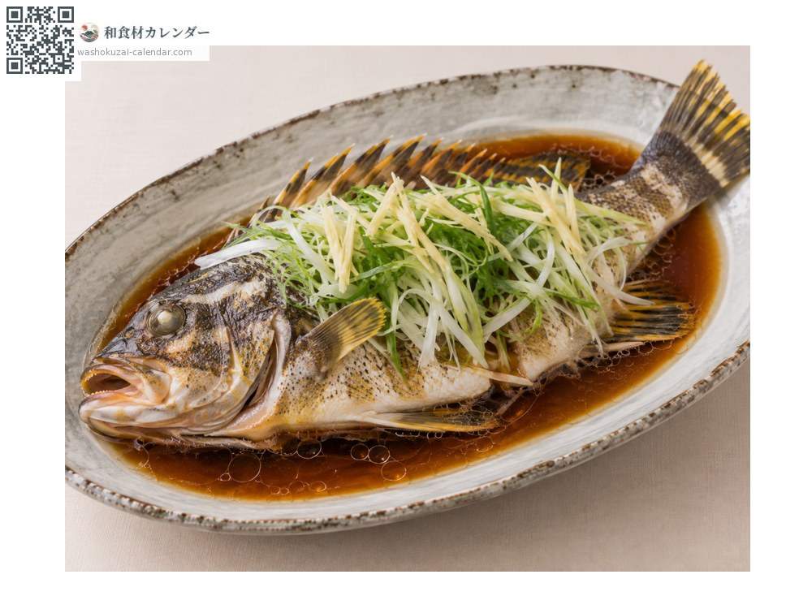
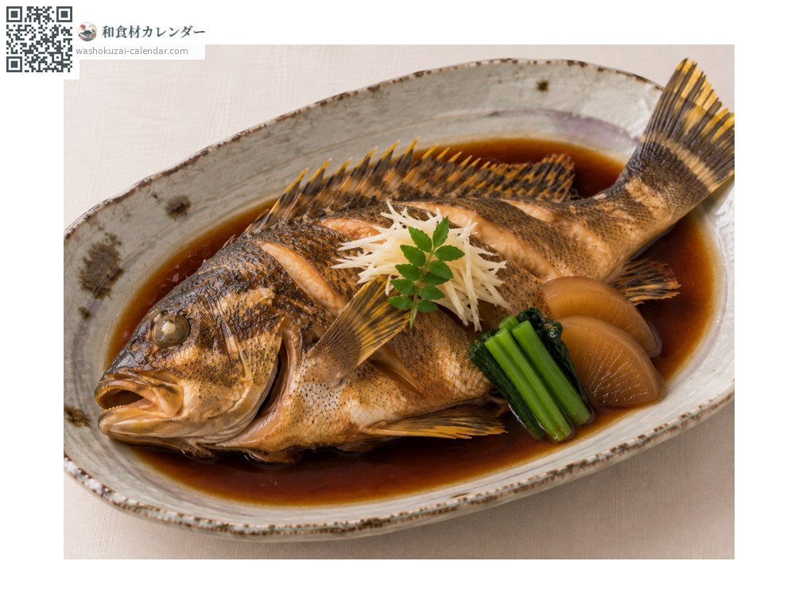
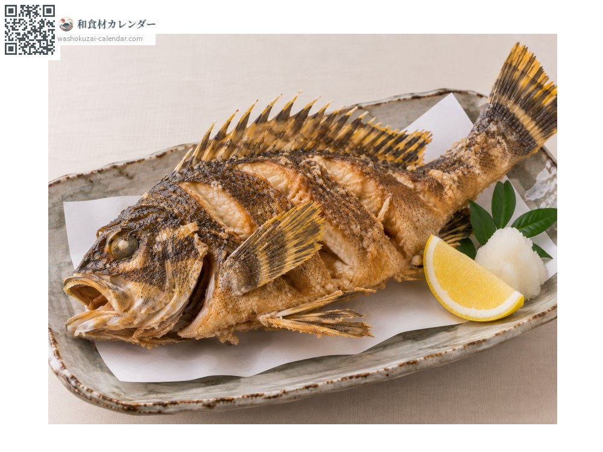

魚介
タカノハダイ
たかのはだい
別名・別表記鷹羽鯛、takanohadai
旬は1月・2月・11月・12月

旬の時期
1月
2月
3月
4月
5月
6月
7月
8月
9月
10月
11月
12月
旬出回り
調理法

姿蒸し
中華圏で好まれる。丸ごと蒸して熱した油と醤油をかける。

煮付け
甘辛く煮る。冬のものは身が締まる。

唐揚げ
揚げると香りが和らぎ、食べやすくなる。
選び方
縞模様が濃くはっきりしていて、尾びれの白点が鮮明なもの。冬のものを選ぶ。
保存方法
内臓を早めに取り除く。内臓が残ると磯の香りが移りやすい。冷蔵で2日以内に。
主な産地
豆知識
斜めに走る太い縞と、尾びれに散る白い斑点が特徴。中華圏ではこの縞と斑点の取り合わせが縁起の良い魚とされ、祝いの席の姿蒸しに用いられる。冬のものは磯の香りが穏やかで身も締まる。